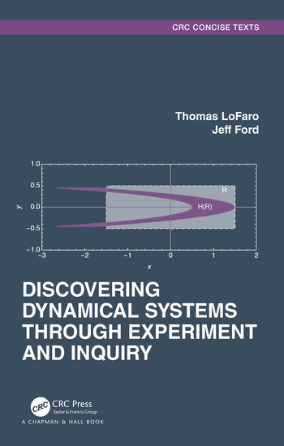

Discovering Dynamical Systems Through Experiment and Inquiry

This website includes activites to accompany Discovering Dynamical Systems Through Experiment and Inquiry, by LoFaro and Ford
Select the Chapter you are intersted in from the menu to the left or the navigation bar above.
This website makes extensive use of the JSXgraph package. We have a short introduction to how to manipulate the boards we use to explore our mathematics here.
Follow along with our blog to see our musings on teaching, dynamics, and more!
If you find any errors in the text, please email us using the address on the Contact page. A list of current errata is available.